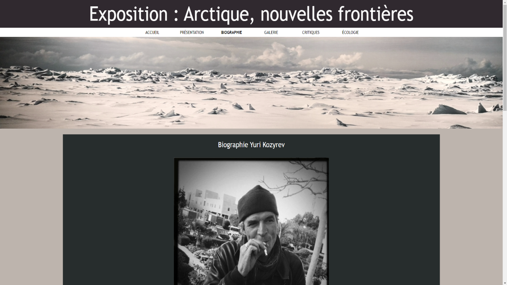

Exhibition: Arctic, new frontiers
First website on the subject of an exhibition
During my first year of DUT we had to create a website in a team of 5
The subject of the website was an exibition that we visited, the subject was ecology and the great north. The work that had been asked was the creation of a site entirely in HTML and CSS. Most of the work was writing the site.
We used the functionality of google map to locate the place of the exhibition on our website. This project was my very first website created in team.